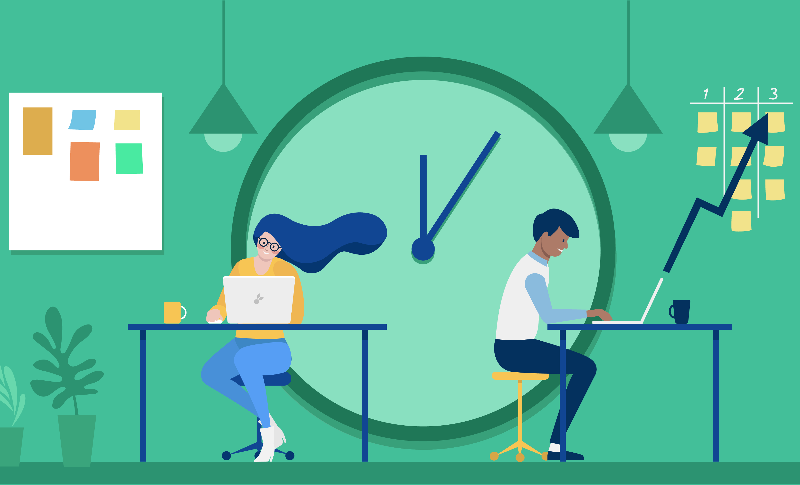

Learning what Ergonomics is with Christian Dellios.
|| HOME || DEFINITIONS || RESEARCH || SAFTEY ||
________________________________________________________________________________
What is Ergonomics?
Ergonomics is the living conditions of a study or work space. This can effect your eye sight and posture. Items involving ergonomics include chairs, sunglight, desk and more.
Did you Know, that more than 50% of students don't keep a straight posture? Crazy right?!
________________________________________________________________________________
Key Definition terms
-Phyisology: A branch of biology that deals with the parts of organisms and how they work.
-Posture: A positon of someones back they have when they sit/stand.
-Productivity: The state of being being productive.
-Psychology: The study of the human mind

________________________________________________________________________________
Research on Ergonomics
Consequences:
.gif)
If you live in a bad ergonomics situation, you may obtain a bad posture if your chair is terrible. Your eyes can strain for working too many hours in the dark and obtain muscular pain. MSD (Musculusketetal disorder) is when the nerves in your wrist are damaged and cause pain from unpleasent to excruciating. Poor ergonomics can cause headaches and migraines as well. Bad ergonmoics is a serious problem and can take companies to court. From my research, I could not find any companies who have been taken to court but I did find one that provides their employees a bad ergonomical situation. Tyson Foods, is chicken nugget food brand, that poorly pays their workers, who make them stand very close to each other for hours at a time. Plus, they do not even allow restroom breaks, can you imagine that?
________________________________________________________________________________
How to have good ergonomics
It is best for your elbows to be no more or no less than on a 90 degree angle. You should have lots of light in your room from the sun and lamps and your monitor should be at eye height to not hurt your neck. Your chair should have arm rests so you can have your arms at 90 degrees and have a straight chair to keep a straight posture.
________________________________________________________________________________
Coder: Christian Dellios
Author: Christian Dellios
Source Provider: The Internet
Mentor: Byjus Future Schools
Publisher: Rachele Manjemeli
Click here to go back to the top.